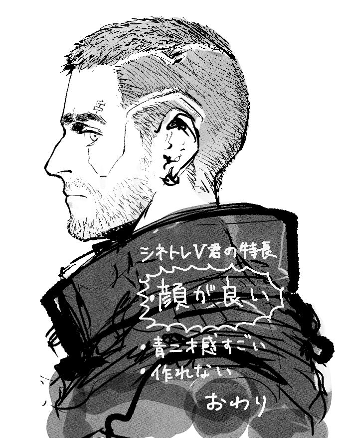
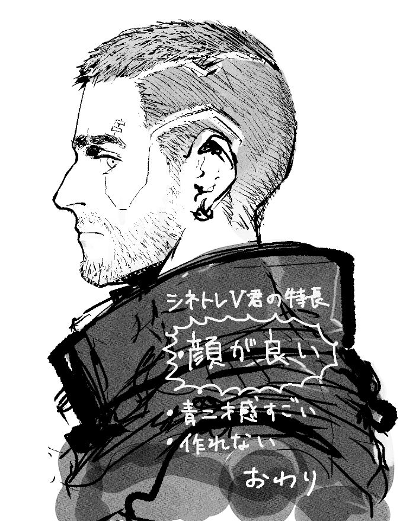
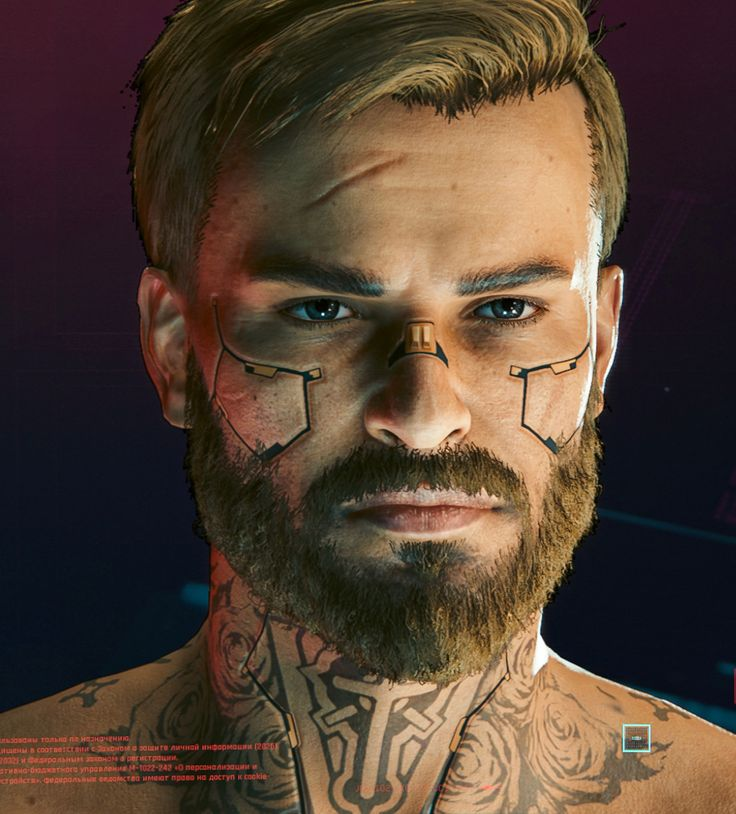
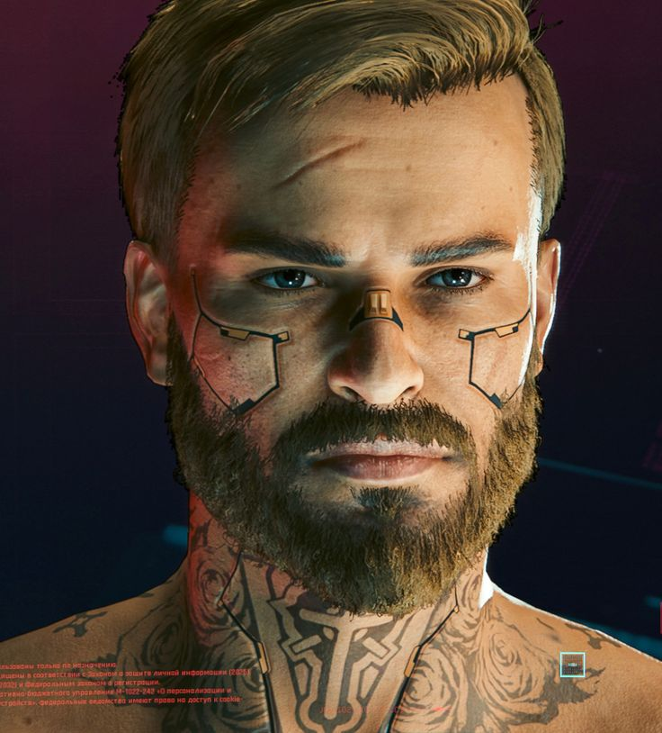

NIGHT CITY LEGEND
V
"In 2077, what makes someone a criminal? Getting caught."
.jpg)
"In 2077, what makes someone a criminal? Getting caught."
V is a mercenary outlaw going after a one-of-a-kind implant that holds the key to immortality. In the dark future of Night City, V navigates a world of corporate greed, street gangs, and cutting-edge cyberware. With the digital ghost of Johnny Silverhand in their head, V must fight to survive and find a cure before time runs out.
A sprawling megalopolis in the Free State of California, ruled by corporations and unassailed by the laws of both country and state. It's a place of glamour, power, and body modification—where everyone has something to hide and everything has a price.
V and Jackie Wells take on the job of a lifetime—stealing a prototype biochip from Arasaka. Nothing goes as planned.
A legendary rockerboy and terrorist, now a digital ghost living in V's head. He wants Arasaka to burn.
A biochip containing an engram—a digital copy of a person's consciousness. It's rewriting V's brain, slowly killing them.
Born and raised on the streets of Night City. V knows the gangs, the fixers, and how to survive when you've got nothing.
From the Badlands outside the city. V values family, loyalty, and freedom over the corporate rat race.
Former Arasaka employee. V knows the corporate world—the backstabbing, the power plays, and how deep the corruption goes.
In Night City, flesh is weak. V can upgrade their body with mantis blades, gorilla arms, sandevistan time dilation, and optical implants. The more chrome you install, the less human you become—but the more dangerous you are.
Hack into enemies, breach security systems, and fry neural implants with quickhacks. The Net is dangerous—but powerful.
The middlemen of Night City. They connect mercs with jobs—kidnappings, assassinations, data theft. Everyone needs a fixer.
V's best friend and partner. A big heart in a bigger body. His dream was to become a Night City legend.
The most powerful megacorporation in the world. They control technology, security, and banking.
Saburo Arasaka built an empire. His children fight over it.
V is caught in the middle of a corporate war.
A Nomad with a grudge and a tank. One of V's most trusted allies—and potentially much more.
A braindance technician fighting to protect those the city exploits. Brilliant, passionate, and dangerous.
V's time is running out. The Relic is overwriting their consciousness. Every choice leads to a different ending—some triumphant, some tragic, all unforgettable. In Night City, you can become a legend. But legends don't live forever.
In 2023, Johnny nuked Arasaka Tower. Now he wants to finish the job—using V's body if necessary.
V becomes the ultimate Night City legend. Fame, fortune, and one last job in space. But at what cost?
V leaves Night City with the Nomads. Freedom, family, and the open road. A chance at a real life.
"Wake the f*ck up, Samurai. We have a city to burn." — Johnny Silverhand
.jpg) 



.jpg) 


.jpg)
.jpg)
.jpg)
.jpg)
.jpg)
.jpg)